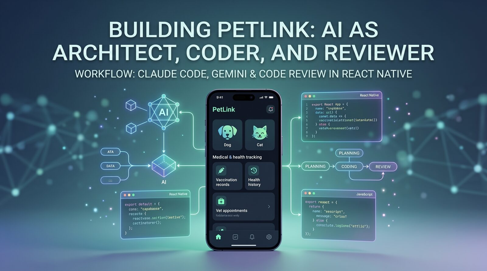

Building PetLink: AI as Architect, Coder and Reviewer
The story behind PetLink, an all-in-one app for pet owners, and how I split the work between Claude Code for planning, Gemini for coding and Claude Code again for code review.
The idea for PetLink started with a boringly ordinary scene: a vaccination card the vet hands you, which then ends up in a drawer. Six weeks later the window for the next shot has passed, nobody noticed in time, and the pet owner is pulled back into the same old cycle: midnight panic over 40 contradictory Google results, searching for a lost dog through Facebook posts and flyers, a health history scattered across paper, emails and memory. None of those tools is bad on its own. The problem is the cognitive load of keeping everything in different places, exactly in the moments when there is the least time to go looking.
PetLink grew out of that frustration. It is an all-in-one mobile platform for pet owners, built in React Native with a Supabase backend: an electronic health record, a lost-pet alert with a real-time map, Love Match for breeding, an AI vet assistant based on Google Gemini that knows the pet's age, breed and medical history, a planner that syncs with the phone's calendar, and an adoption board. It is deliberately an ecosystem rather than a single feature, precisely because ecosystems are harder to leave once you are in.

What was, at least for me, just as interesting as the product itself is how it was built: not one tool doing everything, but three different roles in three different places in the process.
Splitting the work: planning, coding, review
The workflow was simple on paper and fairly disciplined in practice: I used Claude Code for planning, Gemini for writing the code, and Claude Code again for code review of that code before it reached the main branch.
Planning was where time paid off the most. Before a single line of code was written for a feature, a conversation with Claude Code broke down what that feature actually meant in the context of the rest of the app: where it lives in the navigation structure, which tables and relations it needs in Supabase, which screen states exist (empty, loading, error, full), and where it overlaps with features that already exist. For an app with six tightly connected modules, that overlap is not a cosmetic question. The health record feeds the AI assistant with context, the planner relies on the same record for reminders, and the lost-pet map shares the pet profile with everything else. When those connections are planned up front, refactoring later is much rarer.
With that plan in hand, Gemini wrote the actual implementation: components, Supabase queries, navigation logic. Coding speed was not the bottleneck there. The bottleneck was whether that code really followed the plan and whether it was secure and consistent with the rest of the codebase.
That is where Claude Code came back into the picture, this time as a reviewer. A review pass typically looked for things that are easy to miss when you write fast:
- whether Supabase row-level security policies really restrict who can read and change whose record (critical when a pet's health data should be visible only to the owner and, selectively, to the vet),
- whether error and empty states are really covered, or only the happy path,
- whether a new component quietly duplicated logic that already exists elsewhere in the app,
- whether types and data shapes are consistent between screens that share the same pet profile.
None of this is dramatic on its own. But in an app with six modules that share data, exactly this kind of small inconsistency is the slowest to surface through manual testing and the fastest to catch in a review that looks at the whole context at once.
Why this particular split
The natural question is why not use one tool for all three roles. The reason is practical, not ideological. Planning and review are tasks where the value lies in wider context and patient reading: understanding how one change fits into six connected modules, not how fast text gets generated. Writing the implementation, on the other hand, is a task where iteration speed matters most: generate a component quickly, try it, fix it, repeat.
Separating those roles had one less obvious benefit too: a review done by someone (or something) that did not write the code is more honest. It is easier to spot a problem in someone else's solution than in your own. That holds for people, and it turned out to hold in a similar way for this split of roles between tools. Claude Code was not defending decisions Gemini made while writing. It looked at the plan and the actual code, and compared them.
Where this approach breaks
This was not a frictionless process, and it is worth being honest about where it falls short. A review is only as good as the plan it is given. If the plan for a feature was vague or incomplete, a review against that plan could not catch that the plan itself was wrong, only whether the code was faithful to it.
AI tools can also sound confident while being wrong. Both Gemini and Claude Code occasionally suggest a solution that sounds convincing but does not hold up in a specific edge case, for example in the calendar sync logic or in handling the state when the user has no internet connection. None of that replaces manual testing on a real device, and none of it replaces the decision about whether a feature is worth building at all. That is a product question, not a question for the tool that writes the code.
And maybe most importantly: this workflow speeds up how fast an idea becomes working code, but it does not answer whether people actually want that idea. That is exactly why the next phase for PetLink is deliberately slow and small: an 8 to 10 week validation plan with 50 to 100 real users, where the only metric being watched is weekly retention at day 30. If it goes above 20% and at least one segment shows a willingness to pay, the full build goes ahead. If not, we learn from it and adjust. The codebase and the lessons learned stay, whatever the outcome.
What I would pass on to someone building something similar
If you are building something similar, an app with several connected modules that share data, a few things from this experience are worth trying right away:
- Separate planning from writing code as two distinct steps, even when you work alone. The plan does not have to be a long document. It is enough that it explicitly writes down what the new feature touches in the rest of the system, before the first line is written.
- Add a review step that looks at the plan and the code side by side, not just whether the code runs. The question is not only "does this run without errors", but "is this consistent with the rest of the app, and are the edge cases covered".
- Pay special attention to security rules when several modules share the same data. The kind of bug that hurts the most (who can see whose health record) is exactly the one that is easiest to overlook when you are rushing to ship a feature.
- Keep a clear line between how fast you ship code and proof that the product is worth building. Building faster does not mean the idea is validated. That is a separate process, with its own metric and its own deadline.
Ideja za PetLink je počela od jedne dosadno obične scene: kartice za vakcinaciju koju ti veterinar gurne u ruku, a koja onda završi u fioci. Šest sedmica kasnije prozor za sljedeću vakcinu je prošao, niko to nije primijetio na vrijeme, a vlasnik ljubimca je ponovo upao u isti stari ciklus: panika u ponoć uz 40 kontradiktornih Google rezultata, potraga za nestalim psom preko Facebook objava i flajera, zdravstvena istorija razbacana po papirima, mejlovima i sjećanju. Nijedan od tih alata pojedinačno nije loš. Problem je kognitivno opterećenje držanja svega toga na različitim mjestima, baš u trenucima kad je najmanje vremena za traženje.
Iz te frustracije je nastao PetLink, mobilna all-in-one platforma za vlasnike kućnih ljubimaca, rađena u React Native-u sa Supabase backendom: elektronski zdravstveni karton, alert za nestale ljubimce sa mapom u realnom vremenu, Love Match za parenje, AI veterinarski asistent baziran na Google Gemini-ju koji zna starost, rasu i medicinsku istoriju ljubimca, planer sa sinhronizacijom sa kalendarom telefona i oglasnik za udomljavanje. Namjerno je to ekosistem, a ne jedna funkcija, baš zato što je ekosisteme teže napustiti kad jednom uđeš u njih.
Ono što je, bar meni, bilo jednako zanimljivo koliko i sam proizvod jeste kako je pravljen: ne jedan alat koji radi sve, nego tri različite uloge podijeljene na tri različita mjesta u procesu.
Podjela posla: planiranje, pisanje, recenzija
Radni tok je bio jednostavan na papiru, a prilično disciplinovan u praksi: Claude Code sam koristio za planiranje, Gemini za samo pisanje koda, a Claude Code opet za code review tog koda prije nego što bi ušao u glavnu granu.
Planiranje je bilo mjesto gdje se najviše vremena isplatilo. Prije nego što je napisana ijedna linija koda za neku funkcionalnost, razgovor sa Claude Code-om je služio da se razloži šta ta funkcionalnost tačno znači u kontekstu ostatka aplikacije: gdje živi u navigacionoj strukturi, koje tabele i relacije joj trebaju u Supabase-u, koja stanja ekrana postoje (prazno, učitavanje, greška, puno) i gdje se preklapa sa funkcijama koje već postoje. Za aplikaciju sa šest usko povezanih modula to preklapanje nije kozmetičko pitanje. Zdravstveni karton hrani AI asistenta kontekstom, planer se oslanja na isti karton za podsjetnike, a mapa za nestale ljubimce dijeli profil ljubimca sa svim ostalim. Kad se te veze isplaniraju unaprijed, kasnije refaktorisanje je mnogo rjeđe.
Sa tim planom u ruci, Gemini je pisao stvarnu implementaciju: komponente, Supabase upite, navigacionu logiku. Brzina pisanja koda tu nije bila usko grlo. Usko grlo je bilo da li taj kod zaista poštuje plan i da li je bezbjedan i konzistentan sa ostatkom baze koda.
Tu se Claude Code vraćao u priču, ovog puta kao recenzent. Review prolaz je tipično tražio stvari koje je lako propustiti kad se piše brzo:
- da li Supabase row-level security pravila zaista ograničavaju ko može da čita i mijenja čiji zapis (kritično kad zdravstveni podaci ljubimca treba da budu vidljivi samo vlasniku i, selektivno, veterinaru),
- da li su stanja greške i praznog ekrana zaista pokrivena ili samo happy path,
- da li je neka nova komponenta tiho duplirala logiku koja već postoji u drugom dijelu aplikacije,
- da li su tipovi i oblici podataka konzistentni između ekrana koji dijele isti profil ljubimca.
Ništa od ovoga nije dramatično pojedinačno. Ali u aplikaciji sa šest modula koji dijele podatke, baš ta vrsta sitnih nekonzistentnosti je ono što se najsporije otkriva ručnim testiranjem, a najbrže na review-u koji gleda cijeli kontekst odjednom.
Zašto baš ovakva podjela
Prirodno pitanje je zašto ne koristiti jedan alat za sve tri uloge. Razlog je praktičan, ne ideološki. Planiranje i review su zadaci gdje je vrijednost u širem kontekstu i strpljivom čitanju: u razumijevanju kako se jedna izmjena uklapa u šest povezanih modula, a ne u brzini generisanja teksta. Pisanje same implementacije je, nasuprot tome, zadatak gdje je brzina iteracije ono što najviše vrijedi: brzo generisati komponentu, probati je, ispraviti, ponoviti.
Razdvajanje tih uloga je imalo i jednu manje očiglednu korist: review koji radi neko (ili nešto) ko nije napisao taj kod je iskreniji. Lakše je primijetiti problem u tuđem rješenju nego u sopstvenom. To važi za ljude, a ispostavilo se da slično važi i za ovu podjelu uloga između alata. Claude Code nije branio odluke koje je Gemini donio tokom pisanja. Gledao je plan i stvarni kod, i upoređivao ih.
Gdje se ovaj pristup lomi
Ovo nije bio proces bez trenja, i vrijedi biti iskren oko toga gdje nije savršen. Review je onoliko dobar koliko je dobar plan koji mu je dat. Ako je plan za neku funkcionalnost bio nejasan ili nepotpun, review protiv tog plana nije mogao da uhvati da je sam plan pogrešan, samo da li je kod vjeran planu.
AI alati takođe mogu djelovati sigurno dok griješe. I Gemini i Claude Code povremeno predlažu rješenje koje zvuči uvjerljivo, a ne drži vodu u konkretnom edge case-u, na primjer u logici oko sinhronizacije kalendara ili u obradi stanja kad korisnik nema internet konekciju. Ništa od toga ne zamjenjuje ručno testiranje na pravom uređaju, niti zamjenjuje odluku da li je neka funkcionalnost uopšte vrijedna truda da se gradi. To je pitanje za proizvod, ne za alat koji piše kod.
I možda najvažnije: ovaj radni tok ubrzava kako brzo ideja postaje radni kod, ali ne odgovara na pitanje da li ljudi tu ideju zapravo žele. Baš zato je sljedeća faza za PetLink namjerno spora i mala: plan validacije od 8 do 10 sedmica sa 50 do 100 pravih korisnika, gdje je jedina metrika koja se posmatra sedmična retencija na dan 30. Ako pređe 20% i bar jedan segment pokaže volju da plati, ide se dalje na punu izgradnju. Ako ne, uči se iz toga i prilagođava. Kodna baza i naučene lekcije ostaju, bez obzira na ishod.
Šta bih prenio nekom ko pravi slično
Ako gradiš nešto slično, aplikaciju sa više povezanih modula koji dijele podatke, nekoliko stvari iz ovog iskustva vrijedi probati odmah:
- Odvoji planiranje od pisanja koda kao dva odvojena koraka, čak i kad radiš sam. Plan ne mora da bude dugačak dokument. Dovoljno je da eksplicitno zapiše šta nova funkcionalnost dira u ostatku sistema, prije nego što se napiše prva linija.
- Uvedi review korak koji gleda plan i kod jedan pored drugog, a ne samo da li kod radi. Pitanje nije samo "da li se ovo pokreće bez greške", nego "da li je ovo konzistentno sa ostatkom aplikacije i da li su edge case-ovi pokriveni".
- Posebno obrati pažnju na sigurnosna pravila kad više modula dijeli iste podatke. Tip bugova koji najviše boli (ko može da vidi čiji zdravstveni karton) je baš onaj koji se najlakše previdi kad se žuri sa isporukom funkcije.
- Drži jasnu granicu između brzine isporuke koda i dokaza da proizvod vrijedi graditi. Brža izrada ne znači da je ideja validirana. To je zaseban proces, sa sopstvenom metrikom i sopstvenim rokom.